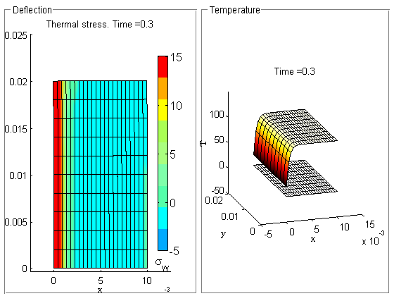
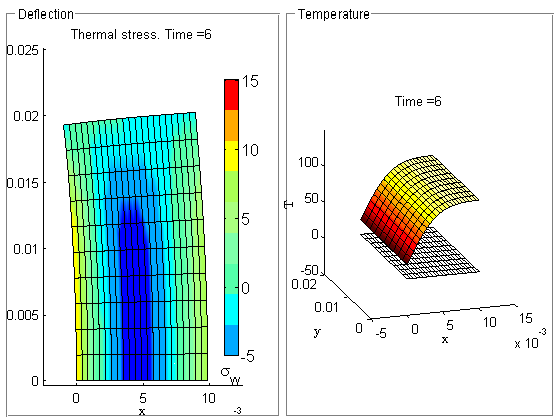
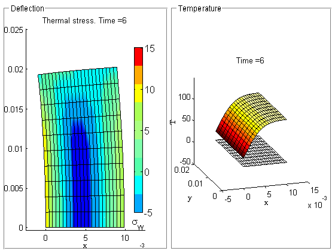
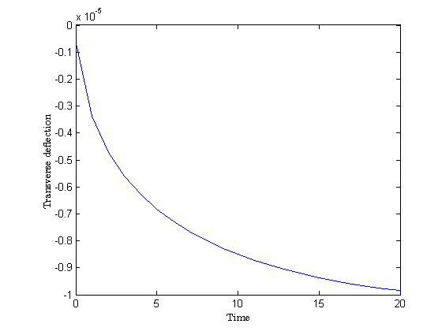

Cooling shock loading of porcelain plate (plane-strain model)
Contents
Link to the m-file.
Description
The structure is a plate long in the out-of-plane direction, hence plane strain is assumed. The structure is initially at 100°C and then suddenly it's left-hand side face is cooled to 20°C and held at that temperature. As the cooling propagates through the wall the thermal stress effects are calculated.
The structure is assumed to be made of industrial-grade porcelain.
Solution
function pub_cooling_stress_shock
The simulation is executed step-by-step at the level of the linear algebra and differential equations obtained after discretization in space.
First we define the physical parameters.
pu= physical_units_struct;
Thermal properties of porcelain
kappa=1.67*pu.W/pu.M/pu.K; % conductivity matrix cp = 1007*pu.J/pu.KG/pu.K;% specific heat per unit mass rho=1800*pu.KG/pu.M^3;% mass density E=70000*pu.MEGA*pu.PA; nu=0.3; alpha = 5e-6; Tini=100*pu.K; Tcold=20*pu.K; dt=0.3*pu.SEC; tend=6*pu.SEC; w=0.010*pu.M;% width of the structure h=0.020*pu.M;% height of the structure t=0.001*pu.M;% thickness in the direction of the plane strain constraint tolerance =w/1e5;% geometrical tolerance
nw=22;
nh=10;
Control parameters:
The time stepping of the heat conduction process is performed using the generalized trapezoidal method. For theta=1 we get the backward Euler method.
theta = 1; % generalized trapezoidal method
Scales for graphics processing of the temperature and displacement fields.
hcscale = 0.0001;
mechscale = 100;
Time instants for graphical output.
tOut=linspace(dt,tend-dt,3);
Create the mesh of the rectangular block.
[fens,fes] = Q4_block(w,h,nw,nh,t);
[fens,fes] = Q4_to_Q8(fens,fes,struct( 'other_dimension',t));
Material: heat conduction.
hcprop=property_heat_diffusion(struct('thermal_conductivity',kappa,... 'specific_heat',cp*rho,'source',0.0)); hcmater = material_heat_diffusion (struct('property',hcprop));
Material: mechanical. Note that in addition to the Young's modulus and the Poisson's ratio we need to supply the coefficient of thermal expansion (called alpha here).
mechprop = property_deformation_linear_iso (struct ('E',E,... 'nu',nu,'alpha', alpha)); mechmater=material_deformation_linear_biax(struct('property',mechprop));
Finite element block: heat conduction
hcfemm = femm_heat_diffusion (struct ('material',hcmater, ... 'fes',fes,... 'integration_rule',gauss_rule(struct('dim',2,'order',2))));
Finite element block: mechanical
mechfemm = femm_deformation_linear (struct ('material',mechmater,... 'fes',fes, ... 'integration_rule',gauss_rule(struct('dim',2,'order',2))));
We create the requisite nodal fields. Geometry:
geom = nodal_field(struct ('name',['geom'], 'dim', 2, 'fens',fens));
Displacement:
u = nodal_field(struct ('name',['geom'], 'dim', 2, 'fens',fens));
Temperature field
tempn= nodal_field(struct('name',['tempn'], 'dim', 1, ... 'nfens',geom.nfens));
The boundary conditions need to be applied both for the thermal problem and also for the mechanical problem. Apply thermal EBC's. The temperature is prescribed on the left-hand side face of the object.
nl=fenode_select (fens,struct ('box',[0 0 0 h],'inflate',tolerance)); tempn = set_ebc(tempn, nl, true, 1, Tcold); tempn = apply_ebc (tempn);
Apply mechanical EBC's. On the plane y=0 we apply a roller boundary condition in the direction of the Y axis to simulate a symmetry boundary condition.
nl=fenode_select (fens,struct ('box',[0 w 0 0],'inflate',h/1000)); u = set_ebc(u, nl, true, 2, 0);
At a single point we prevent translation in the X direction to remove the rigid body mode.
nl=fenode_select (fens,struct ('box',[0 0 0 0],'inflate',h/1000)); u = set_ebc(u, nl, true, 1, 0);
The boundary conditions are now applied to the total displacement field.
u = apply_ebc (u);
The unknowns (degrees of freedom) are now numbered.
tempn = numberdofs (tempn);
u = numberdofs (u);
We are ready to assemble the necessary matrices. We may start with the mechanical problem: Assemble the stiffness matrix.
S = stiffness(mechfemm, sysmat_assembler_sparse, geom, u);
Now assemble the matrices of the thermal problem. The conductivity matrix...
K = conductivity(hcfemm, sysmat_assembler_sparse, geom, tempn);
... the capacity matrix ...
C = capacity(hcfemm, sysmat_assembler_sparse, geom, tempn);
The temperature nodal field needs to be initialized using the initial conditions.
tempn = scatter_sysvec(tempn,gather_sysvec(tempn)*0+Tini);
and the thermal load due to prescribed temperature.
F = nz_ebc_loads_conductivity(hcfemm, sysvec_assembler, geom, tempn);
Note that we don't have to include the thermal loads due to prescribed rate of temperature since the temperature does not change on the cool surface.
The deflection of the horizontal cross-section at the top of the plate will be collected as output. Select output node:
outnl=fenode_select (fens,struct ('box',[0 0 h h],'inflate',tolerance)); outdeflection =[];
t=0;
L = thermal_strain_loads(mechfemm, sysvec_assembler, geom, u,...
tempn-Tini);
u = scatter_sysvec(u, S\L);
Time is now going to be advanced in the thermal problem and the solution of the mechanical problem will get updated in lockstep.
Get ready for the graphics.
fig=figure('visible', 'off'); hpT = uipanel('Parent',fig,'Title','Temperature','FontSize',9,... 'BackgroundColor',[1,1,1],... 'Position',[0.51, 0.01, 0.48, 0.98]); haxT=axes('position',[0.07, 0.07, 0.86, 0.86],'Parent',hpT); hpU = uipanel('Parent',fig,'Title','Deflection','FontSize',9,... 'BackgroundColor', [1,1,1],... 'Position',[0.01, 0.01, 0.49, 0.98]); haxU=axes('position',[0.07, 0.07, 0.86, 0.86],'Parent',hpU); gv=graphic_viewer;
This is the time stepping loop. In order for the figures to come out one after the other in the published document we do not put any sections in the code. All descriptions are in the comments themselves.
while true % Breakout of the time stepping loop if end time had been reached if (t>=tend), break;; end % Should we produce graphical output? if (t>=tOut(1)) visualize; % Visualize the temperature and deflection end % Solve the mechanical problem. The stiffness matrix does not change, the % loads due to the current temperature do change with time. L = thermal_strain_loads(mechfemm, sysvec_assembler, geom, u, tempn-Tini); u = scatter_sysvec(u, S\L); % This is the deflection at the target point out of plane of the wall due % to the thermal bending. outu = gather_values(u, outnl); outdeflection(end+1) = outu(1); % Advance the solution of the thermal problem. The quantities C, K, F are % time-independent, only the current temperature changes with time. Tn=gather_sysvec(tempn); Tn1 = (1/dt*C+theta*K) \ ((1/dt*C-(1-theta)*K)*Tn+F); tempn = scatter_sysvec(tempn,Tn1); % Advance the time by one step t=t+dt; end
 
 Plot the time record of the deflection of the free edge transversely to the plane of the plate as a result of thermally induced bending.
figure;
plot(0:1:length(outdeflection)-1,outdeflection)
labels ' Time' 'Transverse deflection'
 Appendix
The visualization of the results during the time stepping loop is coded in this function. Note that it has access to all thevariables defined in the top-level function.
function visualize tOut=tOut(2: end); set(fig,'visible', 'on'); % Plot the temperature distribution cmap=hot; dcm=data_colormap(struct ('range',[Tini,Tcold], ... 'colormap',cmap)); colorfield=nodal_field(struct ('name', ['colorfield'],... 'data',map_data(dcm, tempn.values))); geom3d=nodal_field(struct ('name', ['geom3d'],... 'data',[geom.values, 0*tempn.values])); u3d=nodal_field(struct ('name', ['u3d'],... 'data',[0*geom.values, tempn.values])); gv=reset (gv,struct('axes',haxT)); camset(gv,[ -0.0456 -0.1468 585.3321 0.0050 0.0100... 50.0000 0 0 1.0000 9.9139]); set(gca,'DataAspectRatio', [1, 1, 1/hcscale]) draw(hcfemm, gv, ... struct ('x',geom3d,'u',0*u3d, 'facecolor','none')); draw(hcfemm, gv, ... struct ('x',geom3d,'u',u3d, 'colorfield',colorfield)); labels x y T title (['Time =' num2str(t)]); % Plot the deflected shape with the stress distribution. cmap=cadcolors2; fld = field_from_integration_points(mechfemm, geom,... u, tempn-Tini, 'Cauchy', 2); nvals=fld.values/(pu.MEGA*pu.PA); nvalsrange=[-5 15]; dcm=data_colormap(struct ('range',nvalsrange, 'colormap',cmap)); colorfield=nodal_field(struct ('name', ['colorfield'],... 'data',map_data(dcm, nvals))); gv=reset (gv,struct('axes',haxU,... 'limits',[-0.25*w 1.25*w -0.02*h 1.25*h])); draw(mechfemm, gv, struct ('x',geom,'u', mechscale*u, ... 'colorfield',colorfield, 'shrink',1)); title (['Thermal stress. Time =' num2str(t)]); draw_colorbar(gv, struct('colormap',cmap, ... 'position',[0.8 0.15 0.05 0.7],... 'label','\sigma_{yy}','minmax',nvalsrange)); labels x y snapnow; end
end